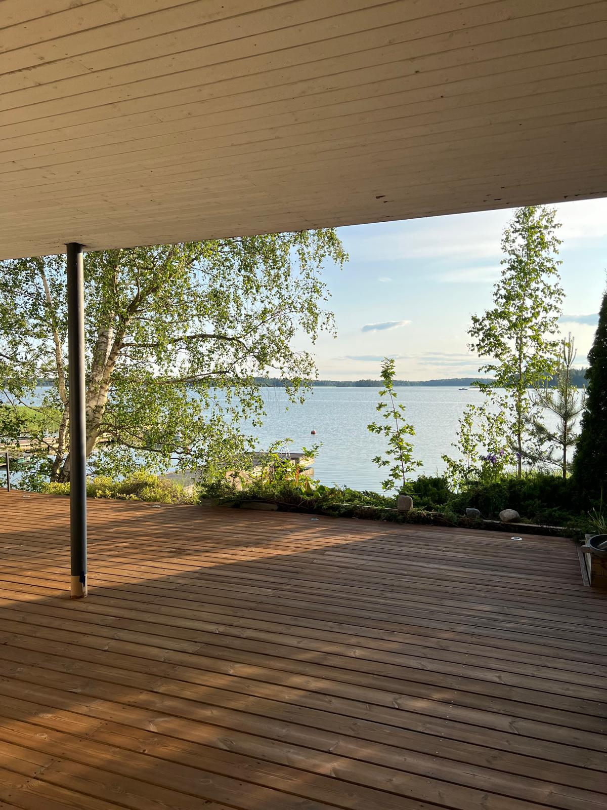

Urbaanipihat
Terassit, jotka erottuvat!
Tervetuloa Urbaanipihoille - laadukasta ulkotilojen huoltoa ja pintakäsittelyä pääkaupunkiseudulla. Erikoisosaamistamme ovat terassien öljyämiset, pesut ja pintojen kunnostus. Aina tarkasti, siististi ja asiakkaan toiveiden mukaan. Tilaa maksuton kartoitus jotta pihasi tekee vaikutuksen joka suunnasta!
Tarjoamme nyt myös laajempia piharemontteja
Säästä jopa 40 % työn osuudesta suoraan verotuksessa. Toimitamme erittelyn verottajaa varten - ei lisävaivaa sinulle.
Maksuton kartoitus
Sovitaan ilmainen käynti, jossa arvioimme terassin kunnon ja annamme selkeän tarjouksen. Kartoitus on maksuton, kun työ tilataan.

Näin työ etenee
Yhteydenotto
Ota meihin yhteyttä. Voit ottaa yhteyttä lomakkeella, WhatsAppilla tai sähköpostitse. Kerro lyhyesti kohteesta, esimerkiksi pinta-ala ja sijainti..
Kartoitus
Maksuton kartoitus. Sovitaan ilmainen kartoituskäynti, jossa arvioimme terassin kunnon ja tarvittavat toimenpiteet. Saat samalla selkeän hinta-arvion.
Suunnittelu
Suunnittelu ja sävyn valinta. Autamme valitsemaan sopivan öljysävyn tai muun käsittelyn - tarvittaessa teemme testikohdan.
Toteutus
Työn toteutus. Saavumme sovittuna päivänä, suojaamme ympäristön ja teemme työn huolellisesti alusta loppuun. Käytämme laadukkaita materiaaleja ja tarkkoja työmenetelmiä.
Lopputulos
Siisti lopputulos ja tarkistus. Siivoamme jälkemme ja käymme työn tuloksen vielä yhdessä läpi. Vasta kun olet tyytyväinen, olemme valmiit.
Jälkihoito ja ohjeistus
Ohjeistamme jälkihoitoon ja terassin pinnan ja kunnon ylläpitoon.
Pihasi ansaitsee parasta
Varmista terassisi kunto ja kiilto ja tilaa ilmainen kartoituskäynti nyt.
Ota yhteyttä